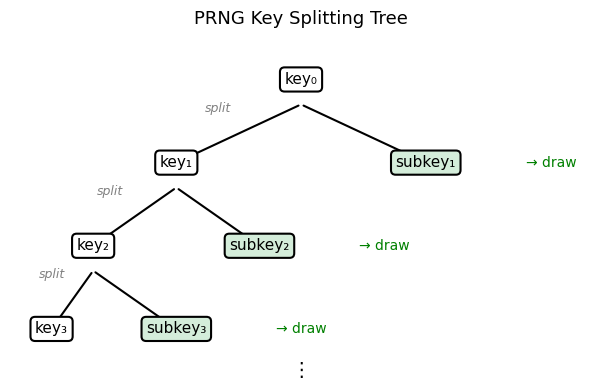
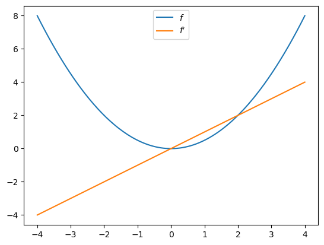

14. JAX#
این سخنرانی مقدمهای کوتاه بر Google JAX ارائه میدهد.
GPU
This lecture was built using a machine with access to a GPU — although it will also run without one.
Google Colab has a free tier with GPUs that you can access as follows:
Click on the “play” icon top right
Select Colab
Set the runtime environment to include a GPU
JAX یک کتابخانه محاسبات علمی با کارایی بالا است که موارد زیر را فراهم میکند:
یک رابط شبیه NumPy که میتواند به صورت خودکار در CPUها و GPUها موازیسازی شود،
یک کامپایلر just-in-time برای تسریع طیف گستردهای از عملیات عددی، و
به طور فزایندهای، JAX همچنین روتینهای محاسبات علمی تخصصیتری را حفظ و ارائه میدهد، مانند آنهایی که در ابتدا در SciPy یافت میشدند.
علاوه بر آنچه در Anaconda موجود است، این سخنرانی به کتابخانههای زیر نیاز دارد:
!pip install jax quantecon
از importهای زیر استفاده خواهیم کرد:
import jax
import jax.numpy as jnp
import matplotlib.pyplot as plt
import numpy as np
import quantecon as qe
توجه کنید که jax.numpy as jnp را import میکنیم که یک رابط شبیه NumPy فراهم میکند.
14.1. JAX به عنوان جایگزین NumPy#
یکی از ویژگیهای جذاب JAX این است که، هر زمان که امکانپذیر باشد، عملیات پردازش آرایههای آن با API NumPy مطابقت دارد.
این بدان معناست که در بسیاری از موارد، میتوانیم از JAX به عنوان جایگزین مستقیم NumPy استفاده کنیم.
بیایید به شباهتها و تفاوتهای بین JAX و NumPy نگاه کنیم.
14.1.1. شباهتها#
در اینجا برخی عملیات استاندارد آرایه با استفاده از jnp آمده است:
a = jnp.asarray((1.0, 3.2, -1.5))
print(a)
[ 1. 3.2 -1.5]
print(jnp.sum(a))
2.6999998
print(jnp.dot(a, a))
13.490001
با این حال، شیء آرایه a یک آرایه NumPy نیست:
a
Array([ 1. , 3.2, -1.5], dtype=float32)
type(a)
jaxlib._jax.ArrayImpl
حتی نگاشتهای با مقدار اسکالر روی آرایهها، آرایههای JAX را برمیگردانند نه اسکالرها!
jnp.sum(a)
Array(2.6999998, dtype=float32)
14.1.2. تفاوتها#
اکنون به برخی از تفاوتهای بین عملیات آرایه JAX و NumPy نگاه کنیم.
14.1.2.1. سرعت!#
فرض کنیم میخواهیم تابع کسینوس را در نقاط بسیاری ارزیابی کنیم.
n = 50_000_000
x = np.linspace(0, 10, n)
14.1.2.1.1. با NumPy#
بیایید با NumPy امتحان کنیم
with qe.Timer():
# First NumPy timing
y = np.cos(x)
0.5691 seconds elapsed
و یک بار دیگر.
with qe.Timer():
# Second NumPy timing
y = np.cos(x)
0.5708 seconds elapsed
در اینجا
NumPy از یک باینری از پیش ساخته شده برای اعمال کسینوس بر یک آرایه از اعداد اعشاری استفاده میکند
باینری روی CPU ماشین محلی اجرا میشود
14.1.2.1.2. با JAX#
اکنون بیایید با JAX امتحان کنیم.
x = jnp.linspace(0, 10, n)
بیایید همان رویه را زمانبندی کنیم.
with qe.Timer():
# First run
y = jnp.cos(x)
# Hold the interpreter until the array operation finishes
jax.block_until_ready(y);
0.1245 seconds elapsed
Note
در اینجا، برای اندازهگیری سرعت واقعی، از متد block_until_ready استفاده میکنیم
تا مفسر را تا زمانی که نتایج محاسبات بازگردانده شوند نگه داریم.
این ضروری است زیرا JAX از ارسال ناهمزمان استفاده میکند که به مفسر Python اجازه میدهد جلوتر از محاسبات عددی حرکت کند.
برای کدهایی که زمانبندی نمیشوند، میتوانید خط حاوی block_until_ready را حذف کنید.
و بیایید دوباره زمانبندی کنیم.
with qe.Timer():
# Second run
y = jnp.cos(x)
# Hold interpreter
jax.block_until_ready(y);
0.0896 seconds elapsed
روی GPU، این کد بسیار سریعتر از معادل NumPy خود اجرا میشود.
همچنین، معمولاً اجرای دوم به دلیل کامپایل JIT سریعتر از اجرای اول است.
این به این دلیل است که حتی توابع داخلی مانند jnp.cos نیز با JIT کامپایل میشوند — و اجرای اول شامل زمان کامپایل است.
چرا JAX میخواهد توابع داخلی مانند jnp.cos را با JIT کامپایل کند به جای اینکه نسخههای از پیش کامپایلشده مانند NumPy ارائه دهد؟
دلیل این است که کامپایلر JIT میخواهد بر اندازه آرایه مورد استفاده (و همچنین نوع داده) تخصص پیدا کند.
اندازه برای تولید کد بهینه اهمیت دارد زیرا موازیسازی کارآمد نیازمند تطابق اندازه کار با سختافزار موجود است.
میتوانیم ادعا که JAX بر اندازه آرایه تخصص پیدا میکند را با تغییر اندازه ورودی و مشاهده زمانهای اجرا تأیید کنیم.
x = jnp.linspace(0, 10, n + 1)
with qe.Timer():
# First run
y = jnp.cos(x)
# Hold interpreter
jax.block_until_ready(y);
0.1399 seconds elapsed
with qe.Timer():
# Second run
y = jnp.cos(x)
# Hold interpreter
jax.block_until_ready(y);
0.0997 seconds elapsed
زمان اجرا افزایش مییابد و سپس دوباره کاهش مییابد (این روی GPU واضحتر خواهد بود).
این با بحث بالا همخوانی دارد – اولین اجرا پس از تغییر اندازه آرایه سربار کامپایل را نشان میدهد.
بحث بیشتر درباره کامپایل JIT در ادامه ارائه شده است.
14.1.2.2. دقت#
یکی دیگر از تفاوتهای بین NumPy و JAX این است که JAX به طور پیشفرض از اعداد اعشاری 32 بیتی استفاده میکند.
این به این دلیل است که JAX اغلب برای محاسبات GPU استفاده میشود و بیشتر محاسبات GPU از اعداد اعشاری 32 بیتی استفاده میکنند.
استفاده از اعداد اعشاری 32 بیتی میتواند منجر به افزایش سرعت قابل توجه با از دست دادن کم دقت شود.
با این حال، برای برخی محاسبات دقت مهم است.
در این موارد، اعداد اعشاری 64 بیتی را میتوان از طریق دستور زیر اعمال کرد
jax.config.update("jax_enable_x64", True)
بیایید بررسی کنیم که این کار میکند:
jnp.ones(3)
Array([1., 1., 1.], dtype=float64)
14.1.2.3. تغییرناپذیری#
به عنوان یک جایگزین NumPy، تفاوت مهمتر این است که آرایهها به عنوان تغییرناپذیر در نظر گرفته میشوند.
برای مثال، با NumPy میتوانیم بنویسیم
a = np.linspace(0, 1, 3)
a
array([0. , 0.5, 1. ])
و سپس دادهها را در حافظه تغییر دهیم:
a[0] = 1
a
array([1. , 0.5, 1. ])
در JAX این کار شکست میخورد!
a = jnp.linspace(0, 1, 3)
a
Array([0. , 0.5, 1. ], dtype=float64)
try:
a[0] = 1
except Exception as e:
print(e)
JAX arrays are immutable and do not support in-place item assignment. Instead of x[idx] = y, use x = x.at[idx].set(y) or another .at[] method: https://docs.jax.dev/en/latest/_autosummary/jax.numpy.ndarray.at.html
طراحان JAX تصمیم گرفتند آرایهها را تغییرناپذیر کنند زیرا JAX از سبک برنامهنویسی تابعی استفاده میکند که در ادامه آن را بررسی میکنیم.
14.1.2.4. راهحل جایگزین#
توجه میکنیم که JAX یک جایگزین برای تغییر درجای آرایه با استفاده از متد at فراهم میکند.
a = jnp.linspace(0, 1, 3)
اعمال at[0].set(1) یک کپی جدید از a را با عنصر اول تنظیم شده بر 1 برمیگرداند
a = a.at[0].set(1)
a
Array([1. , 0.5, 1. ], dtype=float64)
بدیهی است که استفاده از at معایبی دارد:
نحو دست و پاگیر است و
میخواهیم از ایجاد آرایههای جدید در حافظه هر بار که یک مقدار منفرد را تغییر میدهیم، اجتناب کنیم!
از این رو، در بیشتر موارد، سعی میکنیم از این نحو اجتناب کنیم.
(اگرچه در واقع میتواند داخل توابع کامپایلشده JIT کارآمد باشد – اما بیایید این را فعلاً کنار بگذاریم.)
14.2. برنامهنویسی تابعی#
از مستندات JAX:
هنگام پیادهروی در حومه ایتالیا، مردم از گفتن این که JAX دارای “una anima di pura programmazione funzionale” است، تردید نخواهند کرد.
به عبارت دیگر، JAX یک سبک برنامهنویسی تابعی را فرض میکند.
14.2.1. توابع خالص#
پیامد اصلی این است که توابع JAX باید خالص باشند.
توابع خالص دارای ویژگیهای زیر هستند:
قطعی (Deterministic)
بدون عوارض جانبی
قطعی به این معناست که
ورودی یکسان \(\implies\) خروجی یکسان
خروجیها به وضعیت سراسری وابسته نیستند
به طور خاص، توابع خالص همیشه نتیجه یکسانی را برمیگردانند اگر با ورودیهای یکسان فراخوانی شوند.
بدون عوارض جانبی به این معناست که تابع
وضعیت سراسری را تغییر نمیدهد
دادههای ارسال شده به تابع را تغییر نمیدهد (دادههای تغییرناپذیر)
14.2.2. مثالها#
در اینجا مثالی از یک تابع غیرخالص آورده شده است
tax_rate = 0.1
prices = [10.0, 20.0]
def add_tax(prices):
for i, price in enumerate(prices):
prices[i] = price * (1 + tax_rate)
print('Post-tax prices: ', prices)
return prices
این تابع نمیتواند خالص باشد زیرا
عوارض جانبی — متغیر سراسری
pricesرا تغییر میدهدغیرقطعی — تغییر در متغیر سراسری
tax_rateخروجیهای تابع را تغییر خواهد داد، حتی با آرایه ورودی یکسانprices.
در اینجا یک نسخه خالص آورده شده است
tax_rate = 0.1
prices = (10.0, 20.0)
def add_tax_pure(prices, tax_rate):
new_prices = [price * (1 + tax_rate) for price in prices]
return new_prices
این نسخه خالص تمام وابستگیها را از طریق آرگومانهای تابع صریح میکند و هیچ وضعیت خارجی را تغییر نمیدهد.
14.2.3. چرا برنامهنویسی تابعی؟#
در QuantEcon ما توابع خالص را دوست داریم زیرا
به آزمایش کمک میکنند: هر تابع میتواند به صورت مستقل عمل کند
رفتار قطعی و در نتیجه تکرارپذیری را ترویج میدهند
از بروز اشکالاتی که از تغییر وضعیت مشترک ناشی میشود، جلوگیری میکنند
کامپایلر JAX توابع خالص و برنامهنویسی تابعی را دوست دارد زیرا
وابستگیهای داده صریح هستند، که به بهینهسازی محاسبات پیچیده کمک میکند
توابع خالص راحتتر مشتقگیری میشوند (autodiff)
توابع خالص راحتتر موازیسازی و بهینهسازی میشوند (به وضعیت تغییرپذیر مشترک وابسته نیستند)
راه دیگری برای تفکر در این مورد به شرح زیر است:
JAX توابع را به صورت گرافهای محاسباتی نمایش میدهد که سپس کامپایل یا تبدیل میشوند (مثلاً مشتقگیری میشوند).
این گرافهای محاسباتی توصیف میکنند که چگونه یک مجموعه ورودی مشخص به یک خروجی تبدیل میشود.
گرافهای محاسباتی JAX ذاتاً خالص هستند.
JAX از سبک برنامهنویسی تابعی استفاده میکند تا توابع ساختهشده توسط کاربر مستقیماً به نمایشهای گراف-نظری پشتیبانیشده توسط JAX نگاشت شوند.
14.3. اعداد تصادفی#
اعداد تصادفی در JAX نسبت به آنچه در NumPy یا Matlab مییابید بسیار متفاوت هستند.
در ابتدا ممکن است نحو را نسبتاً مفصل بیابید.
اما به زودی متوجه خواهید شد که نحو و معناشناسی برای حفظ سبک برنامهنویسی تابعی که به تازگی مورد بحث قرار دادیم، ضروری است.
علاوه بر این، کنترل کامل وضعیت تصادفی برای برنامهنویسی موازی، مانند زمانی که میخواهیم آزمایشهای مستقل را در چندین رشته اجرا کنیم، ضروری است.
14.3.1. تولید اعداد تصادفی#
در JAX، وضعیت مولد اعداد تصادفی به صورت صریح کنترل میشود.
ابتدا یک کلید تولید میکنیم که مولد اعداد تصادفی را seed میکند.
seed = 1234
key = jax.random.key(seed)
اکنون میتوانیم از کلید برای تولید چند عدد تصادفی استفاده کنیم:
x = jax.random.normal(key, (3, 3))
x
Array([[-0.54019824, 0.43957585, -0.01978102],
[ 0.90665474, -0.90831359, 1.32846635],
[ 0.20408174, 0.93096529, 3.30373914]], dtype=float64)
اگر دوباره از همان کلید استفاده کنیم، در همان seed مقداردهی اولیه میکنیم، بنابراین اعداد تصادفی یکسان هستند:
jax.random.normal(key, (3, 3))
Array([[-0.54019824, 0.43957585, -0.01978102],
[ 0.90665474, -0.90831359, 1.32846635],
[ 0.20408174, 0.93096529, 3.30373914]], dtype=float64)
برای تولید یک نمونه (شبه) مستقل، یک گزینه “تقسیم” کلید موجود است:
key, subkey = jax.random.split(key)
jax.random.normal(key, (3, 3))
Array([[ 1.24104247, 0.12018902, -2.23990047],
[ 0.70507261, -0.85702845, -1.24582014],
[ 0.38454486, 1.32117717, 0.56866901]], dtype=float64)
jax.random.normal(subkey, (3, 3))
Array([[ 0.07627173, -1.30349831, 0.86524323],
[-0.75550773, 0.63958052, 0.47052126],
[-1.72866044, -1.14696564, -1.23328892]], dtype=float64)
نمودار زیر نشان میدهد که چگونه split یک درخت از کلیدها را از یک ریشه واحد تولید میکند، با هر کلید که نمونههای تصادفی مستقل تولید میکند.

این نحو برای کاربر NumPy یا Matlab غیرعادی به نظر میرسد — اما وقتی به برنامهنویسی موازی میرسیم، منطقیتر خواهد بود.
تابع زیر k ماتریس تصادفی n x n (شبه) مستقل را با استفاده از split تولید میکند.
def gen_random_matrices(key, n=2, k=3):
matrices = []
for _ in range(k):
key, subkey = jax.random.split(key)
A = jax.random.uniform(subkey, (n, n))
matrices.append(A)
print(A)
return matrices
seed = 42
key = jax.random.key(seed)
matrices = gen_random_matrices(key)
[[0.74211901 0.54715578]
[0.05988742 0.32206803]]
[[0.65877976 0.57087415]
[0.97301903 0.10138266]]
[[0.68745522 0.25974132]
[0.06595873 0.83589118]]
همچنین میتوانیم هنگام تکرار در یک حلقه از fold_in استفاده کنیم:
def gen_random_matrices(key, n=2, k=3):
matrices = []
for i in range(k):
step_key = jax.random.fold_in(key, i)
A = jax.random.uniform(step_key, (n, n))
matrices.append(A)
print(A)
return matrices
key = jax.random.key(seed)
matrices = gen_random_matrices(key)
[[0.23566993 0.39719189]
[0.95367373 0.42397776]]
[[0.74211901 0.54715578]
[0.05988742 0.32206803]]
[[0.37386727 0.66444882]
[0.80253222 0.42934555]]
14.3.2. چرا وضعیت تصادفی صریح؟#
چرا JAX به این رویکرد نسبتاً مفصل برای تولید اعداد تصادفی نیاز دارد؟
یکی از دلایل حفظ توابع خالص است.
بیایید ببینیم که چگونه تولید اعداد تصادفی با توابع خالص با مقایسه NumPy و JAX مرتبط است.
14.3.2.1. رویکرد NumPy#
در NumPy، تولید اعداد تصادفی با حفظ وضعیت سراسری پنهان کار میکند.
هر بار که یک تابع تصادفی را فراخوانی میکنیم، این وضعیت بهروزرسانی میشود:
np.random.seed(42)
print(np.random.randn()) # Updates state of random number generator
print(np.random.randn()) # Updates state of random number generator
0.4967141530112327
-0.13826430117118466
هر فراخوانی یک مقدار متفاوت را برمیگرداند، حتی اگر ما همان تابع را با همان ورودیها (بدون آرگومان، در این مورد) فراخوانی میکنیم.
این تابع خالص نیست زیرا:
غیرقطعی است: ورودیهای یکسان (در این مورد هیچ) خروجیهای متفاوت میدهند
دارای عوارض جانبی است: وضعیت مولد اعداد تصادفی سراسری را تغییر میدهد
14.3.2.2. رویکرد JAX#
همانطور که در بالا دیدیم، JAX رویکرد متفاوتی اتخاذ میکند و تصادفی بودن را از طریق کلیدها صریح میکند.
برای مثال،
def random_sum_jax(key):
key1, key2 = jax.random.split(key)
x = jax.random.normal(key1)
y = jax.random.normal(key2)
return x + y
با همان کلید، همیشه نتیجه یکسانی دریافت میکنیم:
key = jax.random.key(42)
random_sum_jax(key)
Array(-0.07040872, dtype=float64)
random_sum_jax(key)
Array(-0.07040872, dtype=float64)
برای دریافت نمونههای جدید باید یک کلید جدید ارائه دهیم.
تابع random_sum_jax خالص است زیرا:
قطعی است: کلید یکسان همیشه خروجی یکسان تولید میکند
بدون عوارض جانبی: هیچ وضعیت پنهانی تغییر نمیکند
صریح بودن JAX مزایای قابل توجهی به همراه دارد:
تکرارپذیری: با استفاده مجدد از کلیدها، تکرار نتایج آسان است
موازیسازی: هر رشته میتواند کلید خاص خود را بدون تضاد داشته باشد
اشکالزدایی: نبود وضعیت پنهان استدلال در مورد کد را آسانتر میکند
سازگاری با JIT: کامپایلر میتواند توابع خالص را به طور تهاجمیتری بهینه کند
نکته آخر در بخش بعدی گسترش داده میشود.
14.4. کامپایل JIT#
کامپایلر just-in-time (JIT) JAX اجرا را با تولید کد ماشین کارآمد که با هم اندازه وظیفه و هم سختافزار متفاوت است، تسریع میکند.
ما قدرت کامپایلر JIT JAX را در ترکیب با سختافزار موازی در بالا مشاهده کردیم، هنگامی که cos را روی یک آرایه بزرگ اعمال کردیم.
بیایید همان کار را با یک تابع پیچیدهتر امتحان کنیم:
def f(x):
y = np.cos(2 * x**2) + np.sqrt(np.abs(x)) + 2 * np.sin(x**4) - x**2
return y
14.4.1. با NumPy#
ابتدا با NumPy امتحان خواهیم کرد
n = 50_000_000
x = np.linspace(0, 10, n)
with qe.Timer():
# Time NumPy code
y = f(x)
2.2208 seconds elapsed
14.4.2. با JAX#
اکنون بیایید دوباره با JAX امتحان کنیم.
به عنوان اولین مرحله، np را در همه جا با jnp جایگزین میکنیم:
def f(x):
y = jnp.cos(2 * x**2) + jnp.sqrt(jnp.abs(x)) + 2 * jnp.sin(x**4) - x**2
return y
x = jnp.linspace(0, 10, n)
اکنون بیایید آن را زمانبندی کنیم.
with qe.Timer():
# First call
y = f(x)
# Hold interpreter
jax.block_until_ready(y);
1.0715 seconds elapsed
with qe.Timer():
# Second call
y = f(x)
# Hold interpreter
jax.block_until_ready(y);
0.8751 seconds elapsed
نتیجه مشابه مثال cos است — JAX سریعتر است، به ویژه در
اجرای دوم پس از کامپایل JIT.
علاوه بر این، با JAX، ترفند دیگری در آستین داریم — میتوانیم کل تابع را JIT-کامپایل کنیم، نه فقط عملیاتهای منفرد.
14.4.3. کامپایل کل تابع#
کامپایلر just-in-time (JIT) JAX میتواند اجرا را در درون توابع با ادغام عملیات آرایهای در یک هسته بهینه شده واحد تسریع کند.
بیایید این را با تابع f امتحان کنیم:
f_jax = jax.jit(f)
with qe.Timer():
# First run
y = f_jax(x)
# Hold interpreter
jax.block_until_ready(y);
0.5743 seconds elapsed
with qe.Timer():
# Second run
y = f_jax(x)
# Hold interpreter
jax.block_until_ready(y);
0.5491 seconds elapsed
زمان اجرا دوباره بهبود یافته است — اکنون به این دلیل که تمام عملیات را ادغام کردیم و به کامپایلر اجازه دادیم به طور تهاجمیتری بهینهسازی کند.
برای مثال، کامپایلر میتواند چندین فراخوانی به شتابدهنده سختافزاری و ایجاد تعدادی آرایه میانی را حذف کند.
اتفاقاً، نحو رایجتر هنگام هدف قرار دادن یک تابع برای کامپایلر JIT این است
@jax.jit
def f(x):
pass # put function body here
14.4.4. نحوه کار کامپایل JIT#
هنگامی که jax.jit را به یک تابع اعمال میکنیم، JAX آن را ردیابی میکند: به جای اجرای فوری عملیاتها، دنباله عملیاتها را به صورت یک گراف محاسباتی ثبت میکند و آن گراف را به کامپایلر XLA تحویل میدهد.
سپس XLA عملیاتها را در یک هسته کامپایل شده واحد بهینهسازی و ادغام میکند که متناسب با سختافزار موجود (CPU، GPU، یا TPU) طراحی شده است.
اولین فراخوانی به یک تابع JIT-کامپایل شده سربار کامپایل دارد، اما فراخوانیهای بعدی با همان شکلها و نوعهای ورودی از کد کامپایل شده کششده استفاده میکنند و با سرعت کامل اجرا میشوند.
14.4.5. کامپایل توابع غیرخالص#
اکنون که دیدیم کامپایل JIT چقدر قدرتمند میتواند باشد، درک رابطه آن با توابع خالص مهم است.
در حالی که JAX معمولاً هنگام کامپایل توابع ناخالص خطا نمیدهد، اجرا غیرقابل پیشبینی میشود.
در اینجا تصویری از این واقعیت با استفاده از متغیرهای سراسری آورده شده است:
a = 1 # global
@jax.jit
def f(x):
return a + x
x = jnp.ones(2)
f(x)
Array([2., 2.], dtype=float64)
در کد بالا، مقدار سراسری a=1 در تابع jitted ادغام میشود.
حتی اگر a را تغییر دهیم، خروجی f تحت تأثیر قرار نخواهد گرفت — تا زمانی که همان نسخه کامپایل شده فراخوانی شود.
a = 42
f(x)
Array([2., 2.], dtype=float64)
تغییر بعد ورودی باعث کامپایل مجدد تابع میشود، در آن زمان تغییر در مقدار a اثر میگذارد:
x = jnp.ones(3)
f(x)
Array([43., 43., 43.], dtype=float64)
درس اخلاقی داستان: هنگام استفاده از JAX، توابع خالص بنویسید!
14.5. برداریسازی با vmap#
یکی دیگر از تبدیلهای قدرتمند JAX، jax.vmap است که بهطور خودکار
تابعی که برای یک ورودی منفرد نوشته شده را برداریسازی میکند تا روی دستهها عمل کند.
این کار نیاز به نوشتن دستی کد برداریشده یا استفاده از حلقههای صریح را از بین میبرد.
14.5.1. یک مثال ساده#
فرض کنید تابعی داریم که تفاوت بین میانگین و میانه را برای یک آرایه از اعداد محاسبه میکند.
def mm_diff(x):
return jnp.mean(x) - jnp.median(x)
میتوانیم آن را روی یک بردار منفرد اعمال کنیم:
x = jnp.array([1.0, 2.0, 5.0])
mm_diff(x)
Array(0.66666667, dtype=float64)
حال فرض کنید یک ماتریس داریم و میخواهیم این آمارها را برای هر سطر محاسبه کنیم.
بدون vmap، به یک حلقه صریح نیاز داریم:
X = jnp.array([[1.0, 2.0, 5.0],
[4.0, 5.0, 6.0],
[1.0, 8.0, 9.0]])
for row in X:
print(mm_diff(row))
0.6666666666666665
0.0
-2.0
با این حال، حلقههای Python کُند هستند و نمیتوانند بهطور کارآمد توسط JAX کامپایل یا موازیسازی شوند.
استفاده از vmap محاسبه را روی شتابدهنده نگه میدارد و با سایر
تبدیلهای JAX مانند jit و grad ترکیب میشود:
batch_mm_diff = jax.vmap(mm_diff)
batch_mm_diff(X)
Array([ 0.66666667, 0. , -2. ], dtype=float64)
تابع mm_diff برای یک آرایه منفرد نوشته شده بود، و vmap بهطور خودکار
آن را برای عمل سطربهسطر روی یک ماتریس ارتقا داد — بدون حلقه، بدون تغییر شکل.
14.5.2. ترکیب تبدیلها#
یکی از نقاط قوت JAX این است که تبدیلها بهطور طبیعی با هم ترکیب میشوند.
برای مثال، میتوانیم یک تابع برداریشده را با JIT کامپایل کنیم:
fast_batch_mm_diff = jax.jit(jax.vmap(mm_diff))
fast_batch_mm_diff(X)
Array([ 6.66666667e-01, -2.77555756e-16, -2.00000000e+00], dtype=float64)
این ترکیب jit، vmap، و (همانطور که در ادامه خواهیم دید) grad در قلب
طراحی JAX قرار دارد و آن را بهویژه برای محاسبات علمی و یادگیری ماشین بسیار قدرتمند میسازد.
14.6. مشتقگیری خودکار: یک پیشنمایش#
JAX میتواند از مشتقگیری خودکار برای محاسبه گرادیانها استفاده کند.
این ویژگی میتواند برای بهینهسازی و حل سیستمهای غیرخطی بسیار مفید باشد.
در اینجا یک مثال ساده با تابع \(f(x) = x^2 / 2\) آورده شده است:
def f(x):
return (x**2) / 2
f_prime = jax.grad(f)
f_prime(10.0)
Array(10., dtype=float64, weak_type=True)
بیایید تابع و مشتق آن را رسم کنیم، با توجه به اینکه \(f'(x) = x\).
fig, ax = plt.subplots()
x_grid = jnp.linspace(-4, 4, 200)
ax.plot(x_grid, f(x_grid), label="$f$")
ax.plot(x_grid, [f_prime(x) for x in x_grid], label="$f'$")
ax.legend(loc='upper center')
plt.show()

مشتقگیری خودکار موضوعی عمیق با کاربردهای فراوان در اقتصاد و مالی است. ما یک بررسی جامعتر را در درس مربوط به مشتقگیری خودکار ارائه میدهیم.
14.7. تمرینها#
Exercise 14.1
در بخش تمرین سخنرانی ما در مورد Numba، ما از مونت کارلو برای قیمتگذاری یک اختیار خرید اروپایی استفاده کردیم.
کد با چندرشتهای مبتنی بر Numba تسریع شد.
سعی کنید نسخهای از این عملیات را برای JAX بنویسید، با استفاده از همان پارامترها.
Solution to Exercise 14.1
در اینجا یک راهحل آورده شده است:
M = 10_000_000
n, β, K = 20, 0.99, 100
μ, ρ, ν, S0, h0 = 0.0001, 0.1, 0.001, 10, 0
@jax.jit
def compute_call_price_jax(β=β,
μ=μ,
S0=S0,
h0=h0,
K=K,
n=n,
ρ=ρ,
ν=ν,
M=M,
key=jax.random.key(1)):
s = jnp.full(M, np.log(S0))
h = jnp.full(M, h0)
def update(i, loop_state):
s, h, key = loop_state
key, subkey = jax.random.split(key)
Z = jax.random.normal(subkey, (2, M))
s = s + μ + jnp.exp(h) * Z[0, :]
h = ρ * h + ν * Z[1, :]
new_loop_state = s, h, key
return new_loop_state
initial_loop_state = s, h, key
final_loop_state = jax.lax.fori_loop(0, n, update, initial_loop_state)
s, h, key = final_loop_state
expectation = jnp.mean(jnp.maximum(jnp.exp(s) - K, 0))
return β**n * expectation
Note
ما از jax.lax.fori_loop به جای حلقه for پایتون استفاده میکنیم.
این به JAX اجازه میدهد حلقه را به طور کارآمد بدون باز کردن آن کامپایل کند،
که زمان کامپایل را برای آرایههای بزرگ به طور قابل توجهی کاهش میدهد.
بیایید یک بار آن را اجرا کنیم تا کامپایل شود:
with qe.Timer():
compute_call_price_jax().block_until_ready()
5.8054 seconds elapsed
و اکنون بیایید آن را زمانبندی کنیم:
with qe.Timer():
compute_call_price_jax().block_until_ready()
5.4932 seconds elapsed